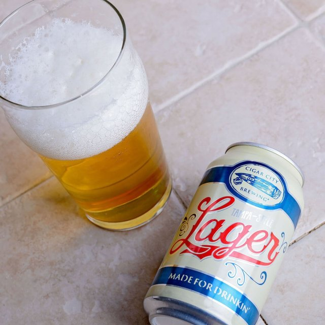

HOME
LAGER
Tampa-Style Lager
Cigar City Brewing
Inspired by traditional German lagers, our Tampa-style Lager is brewed with German malted barley, Hallertauer hops and an authentic Bavarian lager yeast. We combine these ingredients to create a style that’s quite unique to our hometown of Tampa, Florida, but will find admirers wherever a crisp, dry and flavorful lager is called for. Familiar to generations, it’s truly a beer that’s made for drinkin’.
Steeped in the unique culture and history of Tampa, Florida, Cigar City Brewing began handcrafting award-winning beer in 2009. Cigar City Brewing’s ales and lagers bring to mind the sun and citrus for which Florida is known, while taking cues from the cigar industry upon which Tampa was built.
Check out their site HERE 